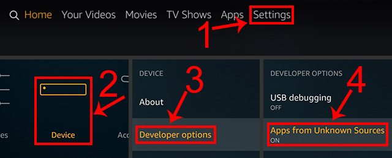

电视上装 APK 的 Downloader，我踩过的五个坑
Downloader 是电视盒子上装第三方应用最常用的工具，上手一分钟就能输地址开始下，但几个隐蔽的坑踩过之后才知道防——从 Fire TV 商店版网页打不开到短代码输错，每个坑都有现成解法。
前言
第一次在 Fire TV 棒上装 Downloader官网 时，我以为就是个"输网址→下载→装完"的流程，一分钟搞定。结果从装完应用到真正下成第一个文件，花了快半小时——不是我笨，是这软件藏着好几个新人必踩的坑，踩一个卡五分钟，踩两个可能就以为软件坏了要卸载重装。
写这篇就是把我踩过的坑一个个列出来，症状、原因、解法都讲清楚。你照着过一遍，大概率能省我那半小时。
坑一：Fire TV 商店版打开任何网页都提示"无法访问"
症状
从亚马逊应用商店搜 Downloader、点安装、装好启动——地址栏随便输个网址，弹出来的是一行刺眼的 Webpage not available（无法访问网页）。网络明明正常，应用图标也在，就是网页打不开。
原因
这不是软件坏了，是亚马逊的商店政策。亚马逊为了保护自家 Silk 浏览器的市场份额，要求所有上架的第三方浏览器默认禁用网页渲染引擎。商店版的 Downloader 拿到的就是一个"引擎被锁"的构建——下载功能不受影响，但"打开网页"这一半直接被阉割了。
Google Play 版没有这个问题，因为那边没这道闸。
解法
开发者专门做了一个从官方下载就能拿到的免费的官方插件来绕开这个限制，本质是把浏览器能力拆成独立安装包。四步搞定：
- 打开应用，停在首页地址栏
- 输入短代码
browser（五个字母），或者数字代码250931 - 按前往，插件安装包自动下载
- 装完插件文件可以删掉，引擎功能已经永久恢复
之后浏览器操作、JavaScript 开关等所有功能和其他平台一致。
坑二：下载进度永远卡在"连接中"
症状
地址栏粘好 APK 直链，按前往——弹出下载进度窗，显示"连接中"，然后就没下文了。等了两三分钟还是这三个字，退出重进也一样。
原因
这个坑几乎只出现在 Fire TV 棒上，根因是供电不足。Fire TV 棒的 USB 口电流输出有限，接在某些电视的后置 USB 口时，电压降导致网络模块初始化不稳定，应用建立不了完整的 HTTP 连接。
我第一次碰到时以为是源站挂了，换了三个直链都卡——后来把棒插到电视前面的 USB 口（电流通常更足），立刻就开始下了。
解法
- 优先插电视前面板的 USB 口，不要插背后
- 如果还卡，换一根更短的 USB 供电线
- 实在不行，用官方的 USB 电源适配器给棒供电，绕过电视 USB 口
坑三：页面能打开但按钮点不动、内容区空白
症状
地址栏输进去，页面确实渲染出来了——但菜单点了没反应，有些内容区域是白的，或者加载不完整。看起来像是"网页没加载全"。
原因
Downloader 的浏览器 JavaScript 默认禁用，这是它和手机浏览器最反直觉的差异。Downloader文档里说设计上这么做有三个好处：页面加载更快（不跑脚本直接渲染结构）、广告少（大部分广告靠脚本注入）、更安全（老盒子跑不明脚本风险高）。
代价就是：依赖脚本的现代网页会显示不完整。
解法
两个入口，效果一样：
- 浏览器菜单：浏览中按遥控器菜单键，选"启用 JavaScript"（临时，随页面会话）
- 设置区：侧边菜单进设置，找到 JavaScript 选项（全局）
判断口诀：看起来不对就开，开完不行再关。另外，这个开关完全不影响下载功能——文件直链下载从来不需要脚本。
坑四：短代码和短链搞混，输了半天打不开
症状
看论坛帖有人说"在 Downloader 里输 12345 就能下"，你输进去，结果打开的是一个网页而不是开始下载——或者直接报错"无效地址"。
原因
很多新人把短代码（五位数）和短链（完整网址）搞混了。短代码是官方缩短服务把直链压缩成的五六位数字，直接输数字就行；短链是缩短服务生成的完整 URL，输 URL 也能到同一个地方——但输错了形态（比如把完整 URL 当成代码输）就会走偏。
发布者的锅也有：很多分享帖只写"输代码"，不写清是几位数、也不说这是短代码不是短链。
解法
- 别人说"输代码" → 确认是五位数还是六位数，直接输数字
- 别人给了完整网址 → 直接粘进去，不需要再转代码
- 自己分享时附一句"在地址栏输入即可"，写清位数
代码输错了指向改不了，生成错了就放弃旧的、重新生成一个新的。
坑五：安装 APK 时被系统拦截"未知来源"
症状
下载完成弹窗点"立即安装"——系统弹警告：为保护设备安全，已阻止安装未知来源应用，按钮是灰的不让点。

原因
这是安卓系统的安全机制，默认禁止安装非官方商店来源的 APK。不是 Downloader 的问题，是你电视盒子的系统设置还没开过这个开关。
解法
进系统设置 → 应用管理 → 特殊权限 → 安装未知应用 → 找到 Downloader → 打开允许开关。不同品牌盒子路径略有差异，但关键词就是"未知来源"或"Install unknown apps"。
开完回来点安装，一路过。
防坑清单（速查版）
- 亚马逊商店版先装
browser插件，不装等于买了个残废版 - 下载卡"连接中"先换 USB 口，别怀疑源站
- 页面能开但按钮没反应 → 开 JavaScript
- 输入前先搞清楚是短代码（五位数）还是短链（网址）
- 第一次用先开"未知来源"权限，省得装 APK 时被拦
结尾
知道这些坑之后，Downloader 其实相当省心——它干一件事干得好：让电视上装第三方 APK 变得和手机上下文件一样简单。五个坑没一个是真故障，都是设计选择或平台政策导致的"假问题"，解法也都是一两步的事。下次有人跟你说 Downloader 用不了，先问他：插件装了吗？USB 口插对了吗？这套整理出来的防坑经验怕以后丢，就在GitHub、Gitee、GitCode 三个仓库各留了份副本，下载分类目录下就能找到。